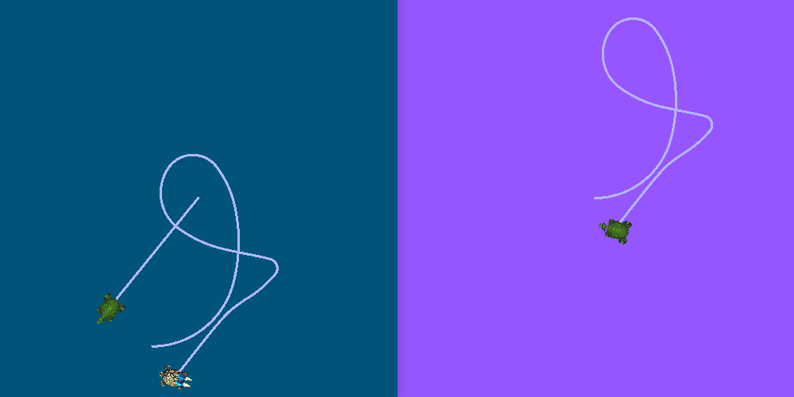

Using ROS 2 launch for large projects
Goal: Learn best practices of managing large projects using ROS 2 launch files
Tutorial level: Intermediate
Time: 20 minutes
Contents
Background
This tutorial describes some tips for writing launch files for large projects. The focus is on how to structure launch files so they may be reused as much as possible in different situations. Additionally, it covers usage examples of different ROS 2 launch tools, like parameters, YAML files, remappings, namespaces, default arguments, and RViz configs.
Prerequisites
This tutorial uses the turtlesim and turtle_tf2_py packages.
This tutorial also assumes you have created a new package of build type ament_python called launch_tutorial.
Introduction
Large applications on a robot typically involve several interconnected nodes, each of which can have many parameters.
Simulation of multiple turtles in the turtle simulator can serve as a good example.
The turtle simulation consists of multiple turtle nodes, the world configuration, and the TF broadcaster and listener nodes.
Between all of the nodes, there are a large number of ROS parameters that affect the behavior and appearance of these nodes.
ROS 2 launch files allow us to start all nodes and set corresponding parameters in one place.
By the end of a tutorial, you will build the launch_turtlesim.launch.py launch file in the launch_tutorial package.
This launch file will bring up different nodes responsible for the simulation of two turtlesim simulations, starting TF broadcasters and listener, loading parameters, and launching an RViz configuration.
In this tutorial, we'll go over this launch file and all related features used.
Writing launch files
1 Top-level organization
One of the aims in the process of writing launch files should be making them as reusable as possible. This could be done by clustering related nodes and configurations into separate launch files. Afterwards, a top-level launch file dedicated to a specific configuration could be written. This would allow moving between identical robots to be done without changing the launch files at all. Even a change such as moving from a real robot to a simulated one can be done with only a few changes.
We will now go over the top-level launch file structure that makes this possible.
Firstly, we will create a launch file that will call separate launch files.
To do this, let's create a launch_turtlesim.launch.py file in the /launch folder of our launch_tutorial package.
import os
from ament_index_python.packages import get_package_share_directory
from launch import LaunchDescription
from launch.actions import IncludeLaunchDescription
from launch.launch_description_sources import PythonLaunchDescriptionSource
def generate_launch_description():
turtlesim_world_1 = IncludeLaunchDescription(
PythonLaunchDescriptionSource([os.path.join(
get_package_share_directory('launch_tutorial'), 'launch'),
'/turtlesim_world_1.launch.py'])
)
turtlesim_world_2 = IncludeLaunchDescription(
PythonLaunchDescriptionSource([os.path.join(
get_package_share_directory('launch_tutorial'), 'launch'),
'/turtlesim_world_2.launch.py'])
)
broadcaster_listener_nodes = IncludeLaunchDescription(
PythonLaunchDescriptionSource([os.path.join(
get_package_share_directory('launch_tutorial'), 'launch'),
'/broadcaster_listener.launch.py']),
launch_arguments={'target_frame': 'carrot1'}.items(),
)
mimic_node = IncludeLaunchDescription(
PythonLaunchDescriptionSource([os.path.join(
get_package_share_directory('launch_tutorial'), 'launch'),
'/mimic.launch.py'])
)
fixed_frame_node = IncludeLaunchDescription(
PythonLaunchDescriptionSource([os.path.join(
get_package_share_directory('launch_tutorial'), 'launch'),
'/fixed_broadcaster.launch.py'])
)
rviz_node = IncludeLaunchDescription(
PythonLaunchDescriptionSource([os.path.join(
get_package_share_directory('launch_tutorial'), 'launch'),
'/turtlesim_rviz.launch.py'])
)
return LaunchDescription([
turtlesim_world_1,
turtlesim_world_2,
broadcaster_listener_nodes,
mimic_node,
fixed_frame_node,
rviz_node
])
This launch file includes a set of other launch files. Each of these included launch files contains nodes, parameters, and possibly, nested includes, which pertain to one part of the system. To be exact, we launch two turtlesim simulation worlds, TF broadcaster, TF listener, mimic, fixed frame broadcaster, and RViz nodes.
备注
Design Tip: Top-level launch files should be short, consist of includes to other files corresponding to subcomponents of the application, and commonly changed parameters.
Writing launch files in the following manner makes it easy to swap out one piece of the system, as we'll see later. However, there are cases when some nodes or launch files have to be launched separately due to performance and usage reasons.
备注
Design tip: Be aware of the tradeoffs when deciding how many top-level launch files your application requires.
2 Parameters
2.1 Setting parameters in the launch file
We will begin by writing a launch file that will start our first turtlesim simulation.
First, create a new file called turtlesim_world_1.launch.py.
from launch import LaunchDescription
from launch.actions import DeclareLaunchArgument
from launch.substitutions import LaunchConfiguration, TextSubstitution
from launch_ros.actions import Node
def generate_launch_description():
background_r_launch_arg = DeclareLaunchArgument(
'background_r', default_value=TextSubstitution(text='0')
)
background_g_launch_arg = DeclareLaunchArgument(
'background_g', default_value=TextSubstitution(text='84')
)
background_b_launch_arg = DeclareLaunchArgument(
'background_b', default_value=TextSubstitution(text='122')
)
return LaunchDescription([
background_r_launch_arg,
background_g_launch_arg,
background_b_launch_arg,
Node(
package='turtlesim',
executable='turtlesim_node',
name='sim',
parameters=[{
'background_r': LaunchConfiguration('background_r'),
'background_g': LaunchConfiguration('background_g'),
'background_b': LaunchConfiguration('background_b'),
}]
),
])
This launch file starts the turtlesim_node node, which starts the turtlesim simulation, with simulation configuration parameters that are defined and passed to the nodes.
2.2 Loading parameters from YAML file
In the second launch, we will start a second turtlesim simulation with a different configuration.
Now create a turtlesim_world_2.launch.py file.
import os
from ament_index_python.packages import get_package_share_directory
from launch import LaunchDescription
from launch_ros.actions import Node
def generate_launch_description():
config = os.path.join(
get_package_share_directory('launch_tutorial'),
'config',
'turtlesim.yaml'
)
return LaunchDescription([
Node(
package='turtlesim',
executable='turtlesim_node',
namespace='turtlesim2',
name='sim',
parameters=[config]
)
])
This launch file will launch the same turtlesim_node with parameter values that are loaded directly from the YAML configuration file.
Defining arguments and parameters in YAML files make it easy to store and load a large number of variables.
In addition, YAML files can be easily exported from the current ros2 param list.
To learn how to do that, refer to the Understanding ROS 2 parameters tutorial.
Let's now create a configuration file, turtlesim.yaml, in the /config folder of our package, which will be loaded by our launch file.
/turtlesim2/sim:
ros__parameters:
background_b: 255
background_g: 86
background_r: 150
If we now start the turtlesim_world_2.launch.py launch file, we will start the turtlesim_node with preconfigured background colors.
To learn more about using parameters and using YAML files, take a look at the Understanding ROS 2 parameters tutorial.
2.3 Using wildcards in YAML files
There are cases when we want to set the same parameters in more than one node. These nodes could have different namespaces or names but still have the same parameters. Defining separate YAML files that explicitly define namespaces and node names is not efficient. A solution is to use wildcard characters, which act as substitutions for unknown characters in a text value, to apply parameters to several different nodes.
Now let's create a new turtlesim_world_3.launch.py file similar to turtlesim_world_2.launch.py to include one more turtlesim_node node.
...
Node(
package='turtlesim',
executable='turtlesim_node',
namespace='turtlesim3',
name='sim',
parameters=[config]
)
Loading the same YAML file, however, will not affect the appearance of the third turtlesim world. The reason is that its parameters are stored under another namespace as shown below:
/turtlesim3/sim:
background_b
background_g
background_r
Therefore, instead of creating a new configuration for the same node that use the same parameters, we can use wildcards syntax.
/** will assign all the parameters in every node, despite differences in node names and namespaces.
We will now update the turtlesim.yaml, in the /config folder in the following manner:
/**:
ros__parameters:
background_b: 255
background_g: 86
background_r: 150
Now include the turtlesim_world_3.launch.py launch description in our main launch file.
Using that configuration file in our launch descriptions will assign background_b, background_g, and background_r parameters to specified values in turtlesim3/sim and turtlesim2/sim nodes.
3 Namespaces
As you may have noticed, we have defined the namespace for the turlesim world in the turtlesim_world_2.launch.py file.
Unique namespaces allow the system to start two similar nodes without node name or topic name conflicts.
namespace='turtlesim2',
However, if the launch file contains a large number of nodes, defining namespaces for each of them can become tedious.
To solve that issue, the PushRosNamespace action can be used to define the global namespace for each launch file description.
Every nested node will inherit that namespace automatically.
To do that, firstly, we need to remove the namespace='turtlesim2' line from the turtlesim_world_2.launch.py file.
Afterwards, we need to update the launch_turtlesim.launch.py to include the following lines:
from launch.actions import GroupAction
from launch_ros.actions import PushRosNamespace
...
turtlesim_world_2 = IncludeLaunchDescription(
PythonLaunchDescriptionSource([os.path.join(
get_package_share_directory('launch_tutorial'), 'launch'),
'/turtlesim_world_2.launch.py'])
)
turtlesim_world_2_with_namespace = GroupAction(
actions=[
PushRosNamespace('turtlesim2'),
turtlesim_world_2,
]
)
Finally, we replace the turtlesim_world_2 to turtlesim_world_2_with_namespace in the return LaunchDescription statement.
As a result, each node in the turtlesim_world_2.launch.py launch description will have a turtlesim2 namespace.
4 Reusing nodes
Now create a broadcaster_listener.launch.py file.
from launch import LaunchDescription
from launch.actions import DeclareLaunchArgument
from launch.substitutions import LaunchConfiguration
from launch_ros.actions import Node
def generate_launch_description():
return LaunchDescription([
DeclareLaunchArgument(
'target_frame', default_value='turtle1',
description='Target frame name.'
),
Node(
package='turtle_tf2_py',
executable='turtle_tf2_broadcaster',
name='broadcaster1',
parameters=[
{'turtlename': 'turtle1'}
]
),
Node(
package='turtle_tf2_py',
executable='turtle_tf2_broadcaster',
name='broadcaster2',
parameters=[
{'turtlename': 'turtle2'}
]
),
Node(
package='turtle_tf2_py',
executable='turtle_tf2_listener',
name='listener',
parameters=[
{'target_frame': LaunchConfiguration('target_frame')}
]
),
])
In this file, we have declared the target_frame launch argument with a default value of turtle1.
The default value means that the launch file can receive an argument to forward to its nodes, or in case the argument is not provided, it will pass the default value to its nodes.
Afterwards, we use the turtle_tf2_broadcaster node two times using different names and parameters during launch.
This allows us to duplicate the same node without conflicts.
We also start a turtle_tf2_listener node and set its target_frame parameter that we declared and acquired above.
5 Parameter overrides
Recall that we called the broadcaster_listener.launch.py file in our top-level launch file.
In addition to that, we have passed it target_frame launch argument as shown below:
broadcaster_listener_nodes = IncludeLaunchDescription(
PythonLaunchDescriptionSource([os.path.join(
get_package_share_directory('launch_tutorial'), 'launch'),
'/broadcaster_listener.launch.py']),
launch_arguments={'target_frame': 'carrot1'}.items(),
)
This syntax allows us to change the default goal target frame to carrot1.
If you would like turtle2 to follow turtle1 instead of the carrot1, just remove the line that defines launch_arguments.
This will assign target_frame its default value, which is turtle1.
6 Remapping
Now create a mimic.launch.py file.
from launch import LaunchDescription
from launch_ros.actions import Node
def generate_launch_description():
return LaunchDescription([
Node(
package='turtlesim',
executable='mimic',
name='mimic',
remappings=[
('/input/pose', '/turtle2/pose'),
('/output/cmd_vel', '/turtlesim2/turtle1/cmd_vel'),
]
)
])
This launch file will start the mimic node, which will give commands to one turtlesim to follow the other.
The node is designed to receive the target pose on the topic /input/pose.
In our case, we want to remap the target pose from /turtle2/pose topic.
Finally, we remap the /output/cmd_vel topic to /turtlesim2/turtle1/cmd_vel.
This way turtle1 in our turtlesim2 simulation world will follow turtle2 in our initial turtlesim world.
7 Config files
Let's now create a file called turtlesim_rviz.launch.py.
import os
from ament_index_python.packages import get_package_share_directory
from launch import LaunchDescription
from launch_ros.actions import Node
def generate_launch_description():
rviz_config = os.path.join(
get_package_share_directory('turtle_tf2_py'),
'rviz',
'turtle_rviz.rviz'
)
return LaunchDescription([
Node(
package='rviz2',
executable='rviz2',
name='rviz2',
arguments=['-d', rviz_config]
)
])
This launch file will start the RViz with the configuration file defined in the turtle_tf2_py package.
This RViz configuration will set the world frame, enable TF visualization, and start RViz with a top-down view.
8 Environment Variables
Let's now create the last launch file called fixed_broadcaster.launch.py in our package.
from launch import LaunchDescription
from launch.actions import DeclareLaunchArgument
from launch.substitutions import EnvironmentVariable, LaunchConfiguration
from launch_ros.actions import Node
def generate_launch_description():
return LaunchDescription([
DeclareLaunchArgument(
'node_prefix',
default_value=[EnvironmentVariable('USER'), '_'],
description='prefix for node name'
),
Node(
package='turtle_tf2_py',
executable='fixed_frame_tf2_broadcaster',
name=[LaunchConfiguration('node_prefix'), 'fixed_broadcaster'],
),
])
This launch file shows the way environment variables can be called inside the launch files. Environment variables can be used to define or push namespaces for distinguishing nodes on different computers or robots.
Running launch files
1 Update setup.py
Open setup.py and add the following lines so that the launch files from the launch/ folder and configuration file from the config/ would be installed.
The data_files field should now look like this:
data_files=[
...
(os.path.join('share', package_name, 'launch'),
glob(os.path.join('launch', '*.launch.py'))),
(os.path.join('share', package_name, 'config'),
glob(os.path.join('config', '*.yaml'))),
],
2 Build and run
To finally see the result of our code, build the package and launch the top-level launch file using the following command:
ros2 launch launch_tutorial launch_turtlesim.launch.py
You will now see the two turtlesim simulations started.
There are two turtles in the first one and one in the second one.
In the first simulation, turtle2 is spawned in the bottom-left part of the world.
Its aim is to reach the carrot1 frame which is five meters away on the x-axis relative to the turtle1 frame.
The turtlesim2/turtle1 in the second is designed to mimic the behavior of the turtle2.
If you want to control the turtle1, run the teleop node.
ros2 run turtlesim turtle_teleop_key
As a result, you will see a similar picture:
In addition to that, the RViz should have started.
It will show all turtle frames relative to the world frame, whose origin is at the bottom-left corner.

Summary
In this tutorial, you learned about various tips and practices of managing large projects using ROS 2 launch files.